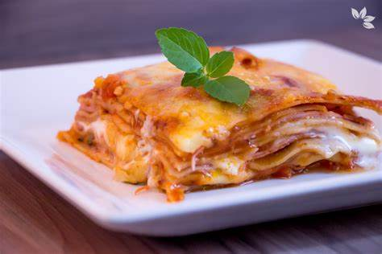

Lasanha
-
3 colheres de margarina
-
4 colheres de farinha de trigo
-
2 xícaras de leite
-
2 xícaras de creme de leite
-
sal e noz-moscada a gosto
-
1 colher de óleo
-
2 dentes de alho amassados
-
1 cebola picada
-
300 g de carne moída
-
3 xícaras de polpa de tomate batida no liquidificador
-
3/4 xícara de água quente
-
sal a gosto
-
200 g de presunto fatiada
-
200 g de mussarela fatiada
-
250 g de massa para lasanha
Modo de preparo
-
Em um refratário grande, coloque uma camada de molho à bolonhesa, massa para lasanha, presunto, mussarela, molho branco.
-
Adicione mais massa para lasanha presunto e mussarela e termine com molho à bolonhesa.
-
Se quiser, polvilhe um pouco de queijo parmesão ralado e leve ao forno para gratinar por 20 minutos.